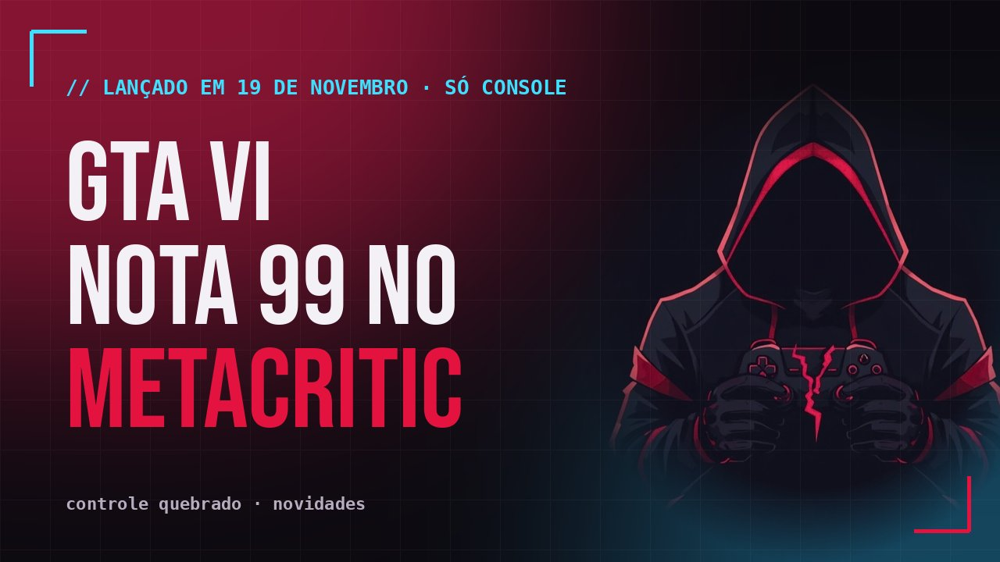
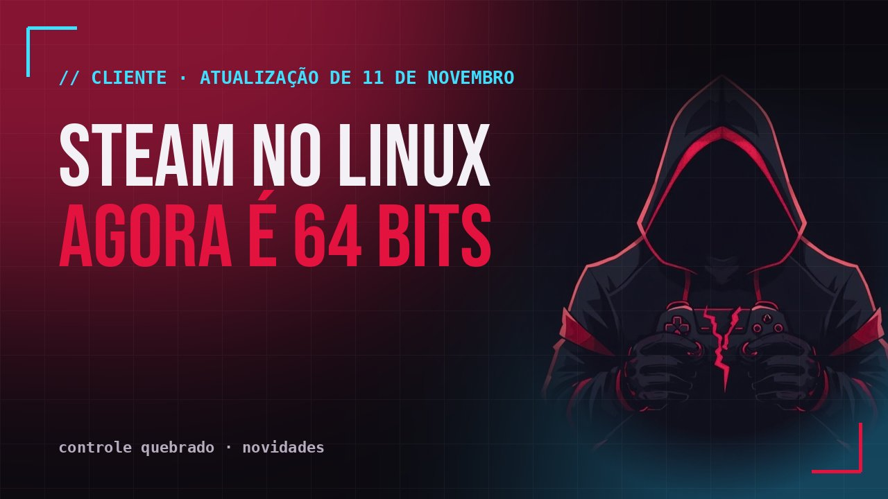

Need for Speed
Underground 2 Revived: NFSU2 no navegador
O projeto comunitário mantém Need for Speed Underground 2 jogável no navegador, com multiplayer e melhorias. O código público foi arquivado, mas o site continua ativo.
Fonte: projeto oficial
O projeto comunitário leva Need for Speed Underground 2 ao navegador, com multiplayer, free roam, controles e melhorias. Veja como funciona e o que mudou.
Lançamentos e notícias de Linux, games e tecnologia, sempre com a fonte para você ler a matéria completa.
O projeto comunitário mantém Need for Speed Underground 2 jogável no navegador, com multiplayer e melhorias. O código público foi arquivado, mas o site continua ativo.
Fonte: projeto oficial
Referências a outros jogos, cultura pop e uma sequência de pistas que remete à Vice City clássica estão entre as descobertas divulgadas.
Fonte: Folha de S.Paulo
A Valve lançou o Proton 11.0-3 como nova versão estável, com 15 jogos a mais funcionando no Linux e correções de problemas do Proton 11.
Entre os jogos que passaram a rodar estão City Car Driving, Blair Witch VR e Hero Plus, e há melhorias de controle em Far Cry: New Dawn e The Binding of Isaac: Rebirth com o Steam Input. A atualização aparece nos Downloads da Steam como uma atualização do Proton 11. O Proton 12 só deve chegar no ano que vem, depois do Wine 12.

A atualização estável da Steam de 11 de novembro trouxe o cliente para Linux em 64 bits, rodando dentro de um contêiner do Steam Runtime.
A Valve diz que a mudança deve dar uma experiência mais consistente entre as distribuições. Você ainda precisa das bibliotecas de 32 bits, porque muitos jogos continuam usando elas. A mesma atualização traz os conjuntos de conquistas e melhorias no HDR do Remote Play. Nos comentários da matéria, alguns usuários relataram jogos que não abriam depois da atualização.

O jogo de sobrevivência SCUM agora tem suporte oficial no Linux pelo Proton, inclusive para entrar em servidores multiplayer.
Segundo a matéria, antes só o modo para um jogador funcionava, e alguns usuários recorriam a soluções alternativas. O jogo usava o anti-cheat Easy Anti-Cheat e depois passou para o BattlEye. A lista da Valve ainda o marca como sem suporte no Steam Deck, e a expectativa é de que ela refaça o teste.

No levantamento de outubro de 2026 da Valve, o Linux ficou com 3,95% dos sistemas, perto da marca de 4%, e o Windows com 93,70%.
O ganho sobre setembro aparece como 0,90 ponto ou 0,05 ponto, conforme o número de setembro usado, porque a Valve revisou esse valor. Entre os jogadores de Linux, processadores AMD aparecem em quase 70%.

O kernel Linux 7.3 foi lançado. Para quem joga com pouca memória de vídeo, a novidade é a primeira parte de um trabalho de engenheiros da Valve: quando a memória da placa enche, o kernel pode mover dados menos importantes para a RAM do sistema.
O conjunto completo já vem no SteamOS, e o restante ainda vai chegar ao Linux. Para saber qual kernel você usa, rode uname -r no terminal. O sistema da imagem usa o kernel 7.0.

O Linux Mint 27 “Adrien” deve sair no Natal de 2026, com base no Ubuntu 26.04, Cinnamon em Wayland e fim das versões intermediárias. Veja o que já é oficial.
A previsão é para o Natal de 2026, sem dia exato, com base no Ubuntu 26.04 LTS e pelo menos as edições Cinnamon, Xfce e MATE. A sessão Wayland do Cinnamon deixa de ser experimental, e o Mint passa a ter um lançamento por ano, sem versões intermediárias.

O PCSX2 2.8.0 foi lançado cerca de seis meses depois da versão 2.6.0, com mudanças concentradas no motor gráfico: mais desempenho, correções de renderização e mais precisão.
No Windows, o Direct3D 12 virou o renderizador padrão para placas NVIDIA e AMD, e os requisitos recomendados foram reorganizados em três níveis: mínimo, moderado e pesado.
Dois canais, um portal: vídeos, notícias, guias e projetos da comunidade reunidos no Controle Quebrado.
Tutoriais, soluções para problemas no PC, Linux, emulação, desempenho e tecnologia.
Ver vídeosVídeos sobre jogos, atualizações, mods, desempenho e descobertas da comunidade, incluindo Need for Speed Underground 2.
Ver vídeosTutoriais e novidades dos dois canais. O vídeo mais recente sobre Underground 2 Revived está em destaque.

Vídeo mais recente sobre o Underground 2 Revived.
Leia também a matériaNotícias e andamento dos projetos que levam jogos de console para o PC, sempre com a fonte.

O projeto de recompilação de Ogre Battle 64 já tem versões para baixar, e a mais recente, a 0.8.3, é de 14 de outubro.
As versões anteriores corrigiram o mapeamento do controle e engasgos periódicos, e a 0.8.3 acrescenta velocidade de até 8x. Na primeira abertura, o programa pede a ROM americana (revisão A) do seu próprio jogo. Em setembro, o projeto marcava 99,05% do código recompilado.
Imagem: capa norte-americana do jogo (Atlus)

O Mario Kart Wiicompiled, anunciado em 15 de julho como a primeira recompilação estática de um jogo de Wii, já tem repositório público com instruções de instalação.
A tradução do jogo roda no seu computador, a partir de uma imagem de disco PAL original que você mesmo extraiu, e nada é enviado para a internet. O projeto admite o uso de ferramentas de IA no desenvolvimento, o que dividiu a comunidade, e diz ter conferido a saída com o comportamento do console real.

Um port de Banjo-Kazooie para PC foi lançado pelo mesmo desenvolvedor da ferramenta N64: Recompiled.
Ele traz widescreen, mais quadros por segundo, câmera no segundo analógico e suporte a mods. O projeto não inclui arquivos do jogo, então é preciso ter a ROM original.

Quest 64 ganhou um port para PC feito com o N64Recomp, na versão 0.1.
Segundo o Retro Handhelds, dá para jogar do começo ao fim, com widescreen, taxa de quadros alta e carregamentos instantâneos. A interface ainda fica em 4:3 em telas largas. O jogo pede uma placa com DirectX 12 ou Vulkan 1.2.
O passo a passo em texto, com os comandos prontos para copiar.
Sempre pelas fontes oficiais, para você baixar a versão mais recente com segurança.
Tudo no site é gratuito. Se o conteúdo te ajudou, você pode apoiar com qualquer valor pelo Pix.
O Controle Quebrado é um portal de PC, games e tecnologia que reúne conteúdo dos canais Controle Quebrado e Caio Mendonça, com tutoriais, notícias, projetos comunitários, descobertas, emulação e jogos.
Exploramos Linux, Windows, emuladores, PCSX2, Steam, Proton, Need for Speed, mods, projetos de fãs, novidades, rumores e descobertas. Informações não oficiais são identificadas e contextualizadas.
O objetivo é informar, ensinar, testar e documentar projetos e novidades que interessam a jogadores e usuários de PC.